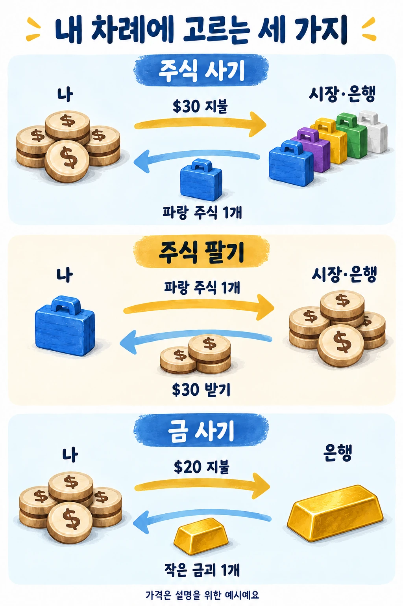
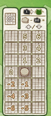

주식 사기 돈 → 주식
은행에 현재 가격을 내고, 시장의 주식을 가져와요. 이어서 시장의 같은 색 토큰 한 개를 더 가져와 ‘주식 매수’ 트랙에 둬요.
왜? 구매 기록이 나중에 주머니로 들어가서, 그 색이 뽑힐 가능성에 영향을 줘요. 샀다고 매번 즉시 오르는 것은 아니에요.
주식을 싸게 사서 비싸게 팔고,
번 돈으로 금을 모아 보세요.
주식을 몰라도 괜찮아요. 내가 고르는 행동은 세 가지예요. 복잡한 주가 계산은 아래 ‘진행자용 순서’를 보면서 함께 처리하면 돼요.
2023년 개정판 기준 · 은괴를 쓰는 구판과 구분해요.
목표는 마지막에 재산이 가장 많아지는 것. 현금에 남은 주식의 판매금과 금의 가치를 더해요. 금만 많이 모았다고 무조건 이기지는 않아요.
생각하는 예시
“나중에 파랑이 오를 것 같아” → 파랑 주식을 사요.
“이미 충분히 올랐어” → 팔아서 돈을 받아요.
“이제 이익을 확보하고 싶어” → 금을 사는 걸 고려해요.
먼저 자동 상대 M.I.B.S.를 넣을지 정해요. 넣는다면 한 명으로 세요. 예를 들어 사람 4명 + 자동 상대라면 5인 판을 써요.
| 사람 | 자동 상대 | 세팅 기준 인원 | 판 면 |
|---|---|---|---|
| 2명 | 반드시 추가 | 3인 | 2–4인 면 |
| 3명 | 없음 / 추가 | 3인 / 4인 | 2–4인 면 |
| 4명 | 없음 / 추가 | 4인 / 5인 | 2–4인 면 / 5인 면 |
| 5명 | 넣지 않음 | 5인 | 5인 면 |
아래 ‘2–4인 / 5인’은 사람이 아니라 자동 상대까지 포함한 세팅 기준 인원이에요.
시장에 색마다 4개만 놓고 끝내면 안 돼요.
기본 20개에 무작위 20개를 더해 총 40개로 시작해요. 그래서 색마다 개수가 달라지고, 그 차이로 시작 가격도 달라져요.
2023년판 공식 룰북 2–3쪽 준비 그림을 함께 보면 검정 토큰과 수준 타일의 정확한 자리를 찾기 쉬워요.

처음에는 내 행동에 해당하는 줄 하나만 찾아보세요.
현재 수준 타일의 수량 안에서 거래해요. 시작할 때는 최대 1개예요.

은행에 현재 가격을 내고, 시장의 주식을 가져와요. 이어서 시장의 같은 색 토큰 한 개를 더 가져와 ‘주식 매수’ 트랙에 둬요.
왜? 구매 기록이 나중에 주머니로 들어가서, 그 색이 뽑힐 가능성에 영향을 줘요. 샀다고 매번 즉시 오르는 것은 아니에요.
내 주식을 시장에 돌려놓고 현재 가격을 받아요. 이어서 현재 ‘주식 매도’ 트랙의 같은 색 토큰 한 개를 시장으로 옮기고, 그 색 주가를 왼쪽 한 칸 내려요.
왜? 판매금을 먼저 받은 뒤 가격이 내려가요. 이후 같은 색을 팔 사람은 낮아진 가격을 적용받아요.
은행에 현재 금값을 내고 금을 받아요. 산 금 개수만큼 ‘매입한 금괴 수’ 표시를 옮겨요. 시장에서 원하는 색 주식 한 개를 ‘금괴 매입’ 트랙에 둬요.
왜? 금을 사는 동시에 어느 색의 구매 기록을 남길지도 고르는 거예요. 금은 게임 중 되팔 수 없으니 거래할 현금도 남겨두세요.
여러 개를 거래해도 행동 트랙에서 옮기는 추가 주식은 한 개예요. 거래한 색 토큰이 해당 시장·트랙에 없으면 다른 가능한 색을 골라요.
이해를 위한 가상 상황이에요. 내 현금 $100, 파랑 한 개 $30, 시장에 파랑 4개가 있고 매수 트랙은 비어 있다고 해볼게요.
실제 게임에서는 다른 사람이 이미 놓은 기록도 확인해요. 매수 트랙에 파랑의 세 번째 토큰을 놓았다면 파랑 주가가 오른쪽 한 칸 올라요. 시장의 마지막 파랑을 가져가도 한 칸 올라요. 두 조건은 각각 확인해요.
앞에서 설명한 한 칸 이동은 행동 도중의 처리예요. 아래 조건을 채우면 주머니를 뽑는 큰 ‘주가 변동’을 추가로 처리해요. 세 트랙의 토큰 수를 합치지는 않아요.
| 확인하는 줄 | 2–4인 판 | 5인 판 |
|---|---|---|
| 주식 매수 | 5칸이 참 | 6칸이 참 |
| 금괴 매입 | 5칸이 참 | 6칸이 참 |
| 현재 주식 매도 | 5개 빠짐 5개 남음 | 6개 빠짐 4개 남음 |
검정 계산 예시
파랑 4개·노랑 1개·검정 2개가 나왔다면, 파랑은 4 − 2 = 2, 노랑은 1 − 2 = −1로 참조표를 봐요. 파랑이 두 칸 오른다는 뜻은 아니에요. 계산한 수에 대응하는 표의 목적지로 이동해요.
참조표의 가로·세로 화살표를 그대로 따라요. 금괴 매입 트랙에 둔 주식과 ‘산 금 개수’ 표시는 별개예요. 정확한 이동 그림은 공식 변동 예시에서 확인할 수 있어요.
가운데 동그라미는 ‘지금 주가 표시가 있는 칸’이에요. 색마다 따로 계산한 숫자를 아래 표에서 찾고, 동그라미에서 그 숫자까지의 방향과 거리를 실제 주가표에 적용해요. 이 작은 표 위로 실제 토큰을 가져오는 것은 아니에요.

파랑 4개·검정 2개 → 4 − 2 = 2.
표의 ‘2’는 동그라미보다 위 한 칸, 오른쪽 한 칸에 있어요. 따라서 실제 파랑 주가 표시도 그렇게 움직여요. 오른쪽으로 두 칸 움직이는 것이 아니에요.
다른 색의 토큰 수는 생략하고, 확인할 한 색과 검정만 입력해요. 이 그림은 주가가 표의 가장자리에 닿지 않은 상황의 방향을 보여줘요.
위 한 칸, 오른쪽 한 칸으로 움직여요.
| 계산값 | 실제 주가 표시의 이동 |
|---|---|
| 0 | 왼쪽 한 칸. 그대로 두지 않아요. |
| 1 / 2 | 위 한 칸 / 위 한 칸 + 오른쪽 한 칸 |
| 3 / 4 | 위 두 칸 / 위 두 칸 + 오른쪽 한 칸 |
| 5 / 6 | 위 세 칸 / 위 세 칸 + 오른쪽 한 칸 |
| −1 / −2 | 아래 한 칸 / 아래 한 칸 + 왼쪽 한 칸 |
| −3 / −4 | 아래 두 칸 / 아래 두 칸 + 왼쪽 한 칸 |
| −5 / −6 | 아래 세 칸 / 아래 세 칸 + 왼쪽 한 칸 |
아무것도 안 뽑힌 색도 계산해요.
검정이 없다면 그 색의 값은 0이라 왼쪽 한 칸 내려가요. 검정이 2개라면 0 − 2 = −2이므로 아래 한 칸·왼쪽 한 칸이에요.
이 게임의 규칙상 검정 한 개는 금값을 한 칸 올린 뒤 주머니로 돌려놓고, 색별 주가는 색 토큰 개수 그대로 계산해요. 대체 토큰을 다시 뽑지 않아요. 예를 들어 파랑 2개·검정 1개라면 파랑은 2로 읽어요. 2 − 1 = 1로 계산하지 않아요.
같은 배치를 위아래로 이어 생각해요. 7은 위 네 칸, 8은 위 네 칸·오른쪽 한 칸. −7은 아래 네 칸, −8은 아래 네 칸·왼쪽 한 칸이에요.
한 칸씩 처리해요. 오른쪽 끝에서 오른쪽으로 가야 하면 대신 위 한 칸, 왼쪽 끝에서 왼쪽으로 가야 하면 대신 아래 한 칸으로 이동해요. 예를 들어 계산값 4는 원래 위 두 칸·오른쪽 한 칸이지만, 오른쪽 끝이라면 위 세 칸이 돼요. 위쪽 끝에서 더 올라가야 하면 오른쪽으로 이동해요. 주가는 최소 $4, 최대 $240 범위 안에 둬요.
이 참조표는 주머니를 뽑는 큰 주가 변동에 사용해요. 매도 직후의 ‘왼쪽 한 칸’ 등 행동 도중의 작은 이동과 구분하세요. 공식 룰북 5쪽 이동 그림·9쪽 계산 예시도 함께 볼 수 있어요.
해당 가격 조정을 마치고 끝내요. 모두에게 차례를 한 번 더 주지 않아요. 남은 주식은 마지막 가격으로 팔되, 그 판매로 가격을 또 내리지 않아요.
최종 재산 = 현금 + 남은 주식 판매금
+ 작은 금괴 × $100 + 큰 금괴 × $500
| 플레이어 | 현금 | 주식 판매금 | 작은 금 | 합계 |
|---|---|---|---|---|
| A | $70 | $60 | 2개 = $200 | $330 |
| B | $120 | $80 | 1개 = $100 | $300 |
A가 이겨요. 총재산이 같으면 금의 가치가 더 큰 사람이 이겨요.
0개 사기·팔기·금 사기도 가능해요. 그래도 해당 트랙의 토큰 한 개를 옮기는 처리는 해요. 거래 없이 시장에 영향을 주는 선택이에요.
판단 팁: 금을 사면 최종 재산을 확보하기 좋지만, 다음에 주식을 살 돈이 줄어요. 거래할 현금과 팔 주식이 모두 없어지지 않을지 먼저 보세요. 항상 정답인 행동은 없어요.
구매 한 번이 반드시 즉시 상승을 만들지는 않아요. 같은 색 세 번째 기록이나 시장 소진 조건, 다음 주가 변동을 구분해서 보세요. 금괴 매입 트랙의 세 번째 색 기록에도 같은 상승 조건이 있어요.
수준은 큰 주가 변동을 처리하면서 확인해요. 행동 도중 한 칸 움직여 새 구역에 닿았다고 바로 바꾸지는 않아요.
뒤 차례의 불리함을 보정하는 일회용이에요. 내 행동에 더해, 자기 타일이 허용하는 효과 하나를 게임 중 한 번 써요. 타일마다 선택지가 다르니 자기 번호의 효과를 확인하세요.